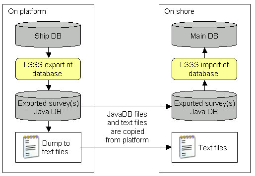

LSSS allows for the export and import of surveys so that information can be moved between databases. A typical use case would be to export a survey from a platform database to a database on shore. The user can choose to export either a particular survey or all surveys for a platform. The principle of export/import is shown in the figure below.

To initiate an export, select File->Export DB... from the main menu. When an export is performed, a new database containing the exported survey is created. This database is of the type Java DB, and is contained in a set of files located in the database directory defined in [Survey configuration - Data files]. These files are easily transferable to another location, for example, the central database on shore, where they can be imported into an existing LSSS database.
The export first copies the nation and platform-specific tables to the export DB:
It then copies the survey-specific tables:
The export also writes each table to a text file in the DB directory, with the name of the table as filename. The dump of the survey-specific tables gets the ID of the survey attached to their filename. The text files contain one table entry per line, with columns separated by a semicolon (;).
Importing surveys to an existing database requires that the database to be imported only contains surveys from one platform, and that this platform already exists in the main database.
In order to import the exported surveys, select File->Import DB... from the LSSS main menu. This will present a dialog asking for the location of the Java DB to import.
The database will by default reside in a subdirectory named lsssExportDb. This is the directory that should be selected.
Pressing OK will start the import of the database.